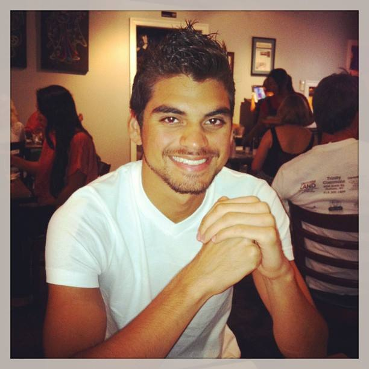

Komron Noorbakhsh is a recent graduate from Georgia State University earning a B.S. in Computer Science.
He is passionate about developing & working with the latest Web Technologies.
Extremely Determined. Hungry to Learn. Keen eye for Detail. Embraces Collaboration.